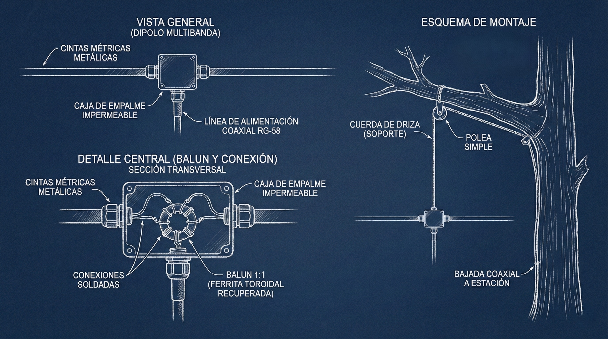
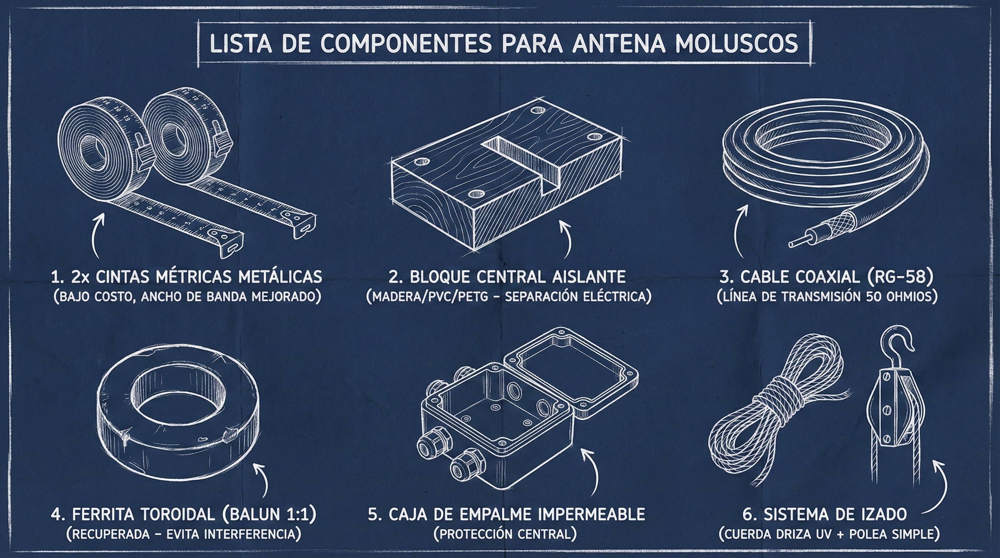
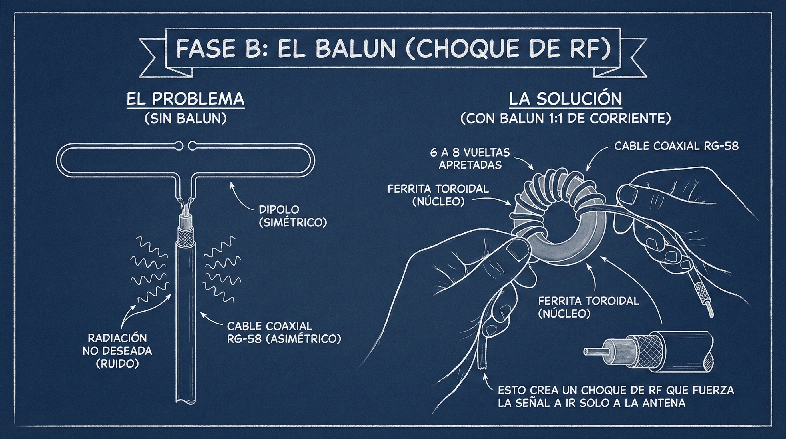
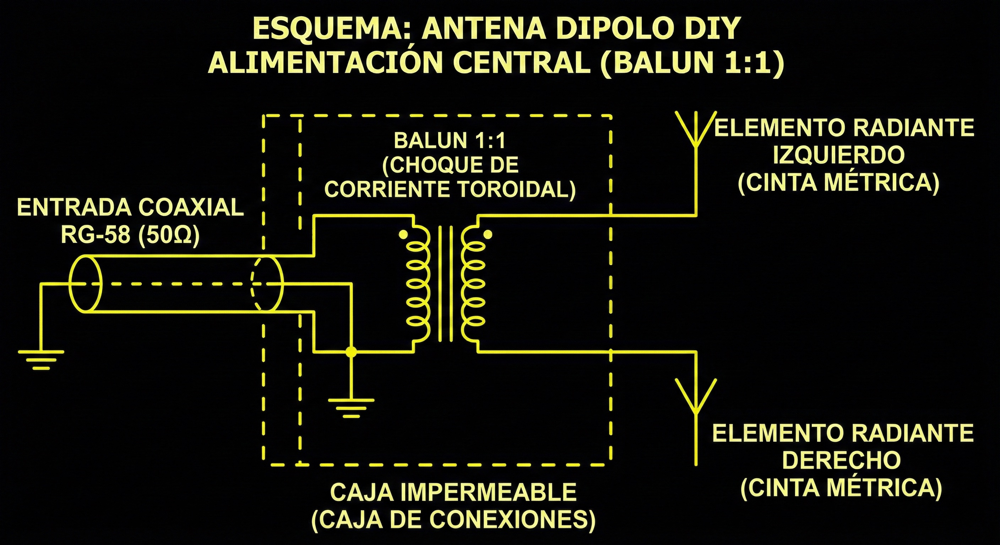

< REGRESAR
MANUAL: ANTENA DIPOLO AJUSTABLE (CINTA MÉTRICA)
00_PRINCIPIO_DE_OPERACIÓN
En ausencia de infraestructura global, la comunicación local (VHF/UHF) es vital. Este diseño utiliza cintas métricas metálicas como elementos radiantes. Su ventaja es doble: son flexibles (resisten el viento) y, crucialmente, son ajustables en longitud, lo que permite sintonizar la antena para diferentes frecuencias (ej. banda marina, radioaficionado 2m, o radio FM de emergencia) simplemente extendiendo o retrayendo la cinta.
[ CLIC PARA AMPLIAR ]

FIG.1: ESQUEMA DEL DISPOSITIVO
01_LISTA_DE_MATERIALES (BOM)
- 2x Cintas Métricas Metálicas: De bajo costo. El ancho de la cinta mejora el ancho de banda (la recepción). Se cortarán según la necesidad.
- Bloque Central Aislante: Madera tratada, PVC o impresión 3D (PETG). Debe separar eléctricamente los dos brazos de la antena.
- Cable Coaxial (RG-58): La línea de transmisión hacia tu radio. 50 Ohmios de impedancia estándar.
- Ferrita Toroidal (Balun 1:1): Recuperada de fuentes de poder viejas o cables de monitor. Vital para evitar que el cable coaxial irradie interferencia.
- Caja de Empalme Impermeable: Una caja de derivación eléctrica pequeña para proteger la conexión central.
- Sistema de Izado: Cuerda de driza resistente a UV y una polea simple para elevar la antena sobre el follaje.
[ CLIC PARA AMPLIAR ]

FIG.2: DETALLE DE MATERIALES
02_PROTOCOLO_DE_CONSTRUCCIÓN
FASE A: PREPARACIÓN DEL NÚCLEO
- Lija los extremos de las cintas métricas donde harás la conexión eléctrica para eliminar la pintura y asegurar un buen contacto.
- Fija las cintas al Bloque Central. Deben quedar alineadas horizontalmente pero separadas entre sí por al menos 2-3 cm en el centro. No deben tocarse.
[ CLIC PARA AMPLIAR ]

FIG.3: MONTAJE DEL NÚCLEO
FASE B: EL BALUN (Choque de RF)
Como muestra el detalle en la Fig.1, el cable coaxial es asimétrico y la antena dipolo es simétrica. Sin un balun, el exterior del cable actuará como parte de la antena, arruinando el patrón de radiación y captando ruido.
- Toma el cable coaxial RG-58 cerca del extremo que va a la antena.
- Enrolla de 6 a 8 vueltas apretadas del cable coaxial a través de la Ferrita Toroidal. Esto crea un choque de RF (Balun 1:1 de corriente) que fuerza la señal a ir solo a la antena.
[ CLIC PARA AMPLIAR ]

FIG.4: BOBINADO DEL BALUN
FASE C: CONEXIÓN Y SELLADO
- Dentro de la Caja Impermeable, pela el extremo del coaxial que sale del balun.
- Separa el vivo (núcleo central) de la malla (blindaje).
- Conecta el vivo central a una de las cintas métricas (usa tornillos y terminales de anillo soldados para mayor robustez).
- Conecta la malla trenzada a la OTRA cinta métrica.
- Sella la caja herméticamente con silicona o prensaestopas. La humedad destruirá el coaxial.
[ CLIC PARA AMPLIAR ]

FIG.5: CONEXIÓN Y SELLADO
03_DESPLIEGUE Y SINTONÍA
[!]
ADVERTENCIA: PELIGRO DE MUERTE. Nunca despliegues antenas cerca de líneas eléctricas. Mantén una distancia de caída de 2x la altura del mástil o árbol.
Usa el sistema de driza y polea para elevar la antena lo más alto posible en una rama despejada. La altura es señal.
Sintonía: Para la banda de 2 metros (aprox. 145 MHz), extiende cada lado de la cinta métrica a aproximadamente 49 cm desde el centro. Usa un medidor de ROE (SWR) si tienes uno. Si la ROE es alta en frecuencias bajas, acorta la cinta. Si es alta en frecuencias altas, alarga la cinta.
[ CLIC PARA AMPLIAR ]

FIG.6: SISTEMA OPERATIVO